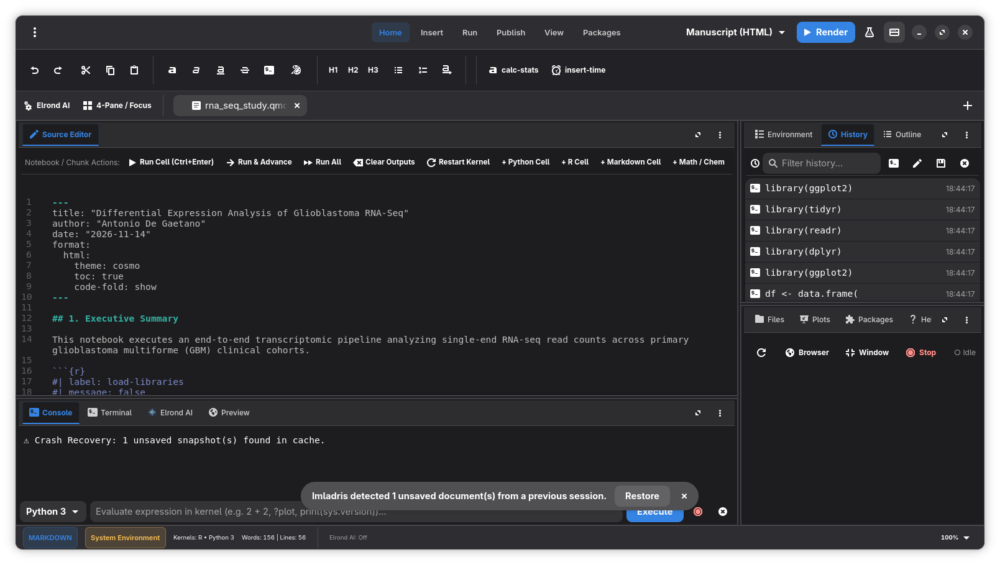
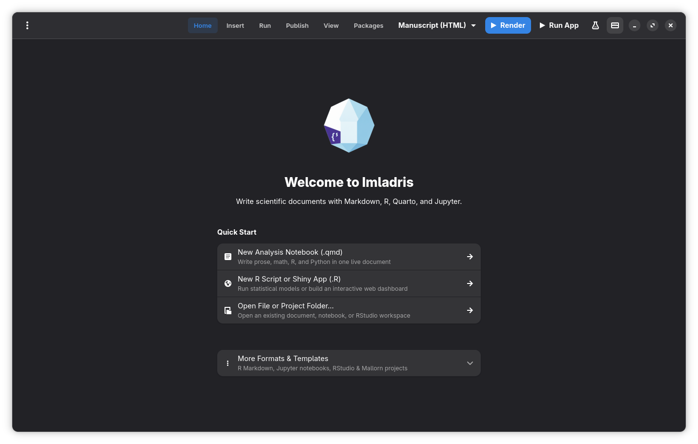
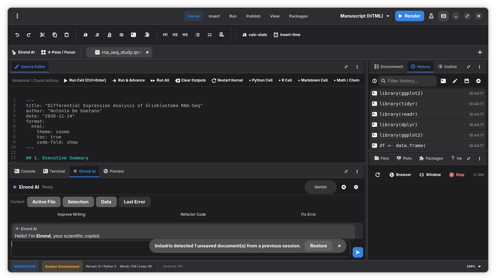
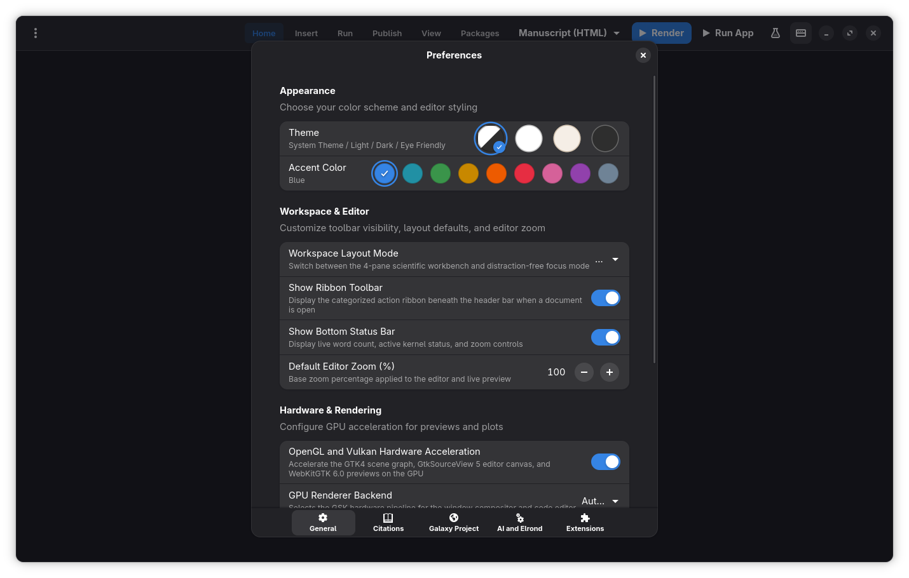
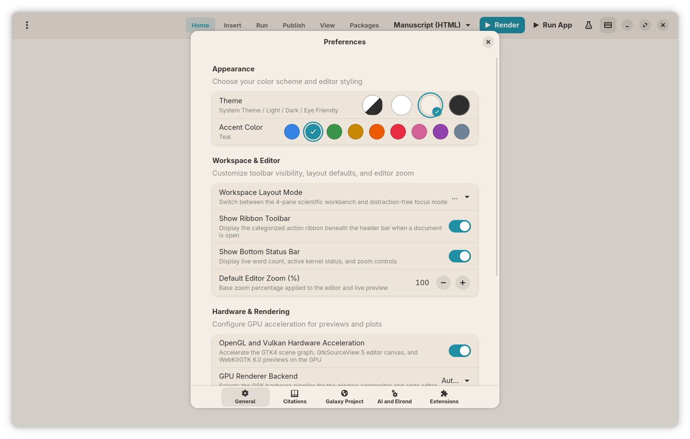

Bridge Cloud Bioinformatics to
Reproducible Manuscripts.
The native GTK4 and Libadwaita scientific workbench built for computational biologists, statisticians, and researchers. Author Quarto, R Markdown, and Jupyter documents with sub-millisecond native responsiveness. Refactor statistical code directly inside your editor buffer, orchestrate multi-provider AI with automatic quota failover, and link Galaxy cloud histories seamlessly — with zero Electron overhead.
curl -fsSL https://antux912012.github.io/imladris/install.sh | bash

Engineered for Speed. Free of Electron Overhead.
Every megabyte matters when processing high-throughput genomic data and large clinical cohorts. See how compiled native architecture compares to legacy web-wrapped tooling.
| Architecture & Metric | Imladris v0.25.0 | RStudio Desktop | Positron IDE | VS Code | JupyterLab |
|---|---|---|---|---|---|
| UI Framework & Toolkit | Native GTK4 & Libadwaita | Qt / Embedded Chromium | Electron (Chromium + Node) | Electron (Chromium + Node) | Web Browser Interface |
| Cold Startup Latency | < 180 ms | 2.8 – 4.5 s | 3.2 – 5.8 s | 2.1 – 4.0 s | 3.5 – 6.0 s |
| Idle RAM Footprint | ~ 45 – 85 MB | 420 – 680 MB | 580 – 890 MB | 480 – 750 MB | 350 – 600 MB (browser) |
| Direct In-Buffer AI Refactoring | Native GtkSourceView Buffer (Preserves Chunks) | No (External Copilot extension) | Partial (Chat side-panel) | Inline Diff (High CPU) | No |
| Free-Tier Multi-AI Failover | Automatic (Cerebras → Groq → Gemini) | None | None | None (Subscription required) | None |
| Offline Vulkan llama.cpp Bundled | Zero Setup (Vulkan / CPU / Metal) | No | No | Requires Ollama daemon | No |
| Bioinformatics Cloud Bridge | Integrated Arekyer Galaxy API | No | No | No | No |
| Regulatory Compliance (GxP / ICH E9) | Built-in Audit Trail + Biostats Engine | Requires external packages | Requires external packages | No | No |
Elven Subsystem Architecture
Rivendell was the timeless sanctuary where scholars, healers, and heroes gathered to study ancient lore and prepare for great quests. Imladris embodies that sanctuary for modern scientific discovery.
renv, Python .venv, Quarto manuscript manifests, and cryptographic reproducibility locks into a clean, portable directory architecture.
The Four Quadrants of Discovery
Modeled after the battle-tested RStudio layout, reimagined natively with GNOME Libadwaita ergonomics, buttery-smooth GPU scrolling, and instant tab switching.
.qmd), R Markdown (.Rmd), Jupyter (.ipynb), R, Python, and Julia. Features intelligent syntax highlighting, code folding, breadcrumb navigation, and line-by-line chunk execution (Ctrl+Enter).
Elrond: Positron-Style In-Buffer Writing
Say goodbye to copying and pasting code out of web chatbots. Elrond edits your manuscript buffers directly in place while safeguarding scientific accuracy and YAML chunk options.
llama-server to run quantized GGUF models locally on your GPU with zero cloud data transmission.
Authentic Screenshots from Running App
Every screenshot displayed below is captured directly from the live v0.25.0 application running natively on Linux with GNOME 47 and Libadwaita.

Figure 1 // Welcome Hub & Session Restoration
Clean progressive-disclosure hub featuring one-click starters for Quarto notebooks, R scripts, Shiny apps, and automatic recovery of unsaved research buffers.

Figure 2 // Elrond AI Copilot & 4-Quadrant Workbench
Context-aware assistant docked alongside a live RNA-seq manuscript. Features smart context chips, direct in-buffer refactoring, and package diagnostics.

Figure 3 // Workspace Layout & GPU Preferences
Comprehensive layout controls. Toggle between the 4-quadrant workbench and distraction-free single-pane focus mode, configure fonts, and enable Vulkan acceleration.

Figure 4 // Libadwaita Theming & Accent Customizer
Pure Libadwaita styling with seamless system dark/light switching, custom accent palettes (Frost, Teal, Gold, Slate), and low-strain Eye Friendly mode.
Install Imladris v0.25.0 Across Linux Systems
Sandboxed Flatpak via Flatpark, native packages for all major distributions, and containerized Docker/Podman environments.
Our self-contained shell installer inspects your Linux distribution and automatically sets up the optimal package (Flatpark or native binary):
# Using curl:
curl -fsSL https://antux912012.github.io/imladris/install.sh | bash
# Or using wget:
wget -qO- https://antux912012.github.io/imladris/install.sh | bash
Imladris is officially published on the Flatpark App Store for sandboxed execution targeting org.gnome.Platform//51:
# 1. Add Flatpark repository
flatpak remote-add --if-not-exists flatpark https://flatpark.org/repo/flatpark.flatpakrepo
# 2. Install Imladris Flatpak
flatpak install flatpark io.github.Antux912012.Imladris
# 3. Launch Imladris
flatpak run io.github.Antux912012.Imladris
Native 64-bit package for Ubuntu 22.04 / 24.04, Debian 12 (Bookworm), elementary OS 7/8, Linux Mint, and Pop!_OS:
# Download and install pre-built .deb:
wget https://github.com/Antux912012/imladris/releases/download/v0.25.0/imladris_0.25.0_amd64.deb
sudo dpkg -i imladris_0.25.0_amd64.deb || sudo apt-get install -f -y
imladris
Native RPM package built for Fedora 40/41, RHEL 9+, CentOS Stream, and AlmaLinux 9+:
# Install directly with dnf:
sudo dnf install -y https://github.com/Antux912012/imladris/releases/download/v0.25.0/imladris-0.25.0-1.fc41.x86_64.rpm
imladris
Installation for openSUSE Tumbleweed and Leap 15.6 via zypper:
# Install via zypper:
sudo zypper install https://github.com/Antux912012/imladris/releases/download/v0.25.0/imladris-0.25.0-1.fc41.x86_64.rpm
imladris
Available on the Arch User Repository (AUR) via paru or yay:
# Using yay:
yay -S imladris
# Or using paru:
paru -S imladris
# Or manual makepkg build from packaging directory:
git clone https://github.com/Antux912012/imladris.git
cd imladris/packaging && makepkg -si
Hermetic NixOS flake definition with complete wrapGAppsHook4 integration:
# Run directly with Nix:
nix run github:Antux912012/imladris
# Or install to your user environment:
nix profile install github:Antux912012/imladris
Native Solus package definition provided at packaging/package.yml:
# Build Solus package from source using solbuild:
git clone https://github.com/Antux912012/imladris.git
cd imladris
ypkg build packaging/package.yml
sudo eopkg it imladris*.eopkg
Reproducible multi-stage container build with Podman or Docker:
# Build container image:
podman build -t imladris:0.25.0 .
# Run with host display forwarding:
podman run --rm -it \
-e DISPLAY=$DISPLAY \
-v /tmp/.X11-unix:/tmp/.X11-unix:ro \
-v $HOME:/workspace \
imladris:0.25.0
Standard Meson and Ninja build workflow from clean source code:
git clone https://github.com/Antux912012/imladris.git
cd imladris
meson setup build --prefix=/usr
ninja -C build
sudo ninja -C build install
Familiar RStudio & POSIX Shortcuts
Engineered to match standard data science habits without requiring cognitive retraining.